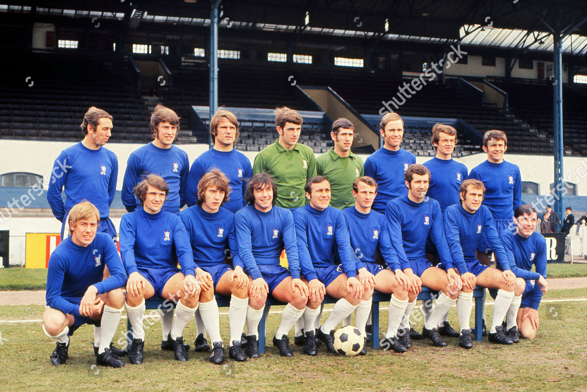

Fundación y Primeros Pasos (1905-1949)
El Chelsea Football Club fue fundado el 10 de marzo de 1905 en el pub The Rising Sun, frente al estadio Stamford Bridge. El objetivo era crear un equipo competitivo que jugara en el estadio recién construido. Fue aceptado de inmediato en la Football League, empezando en la Segunda División.
Desde el comienzo, el club llamó la atención por su estadio moderno y su ambición. Aunque no logró grandes títulos en sus primeros años, logró ascender a Primera División rápidamente y se convirtió en un equipo popular en Londres gracias a su estilo ofensivo.

Primeros Éxitos y Crecimiento (1950–1970)
El club comenzó a fortalecerse en los años 50. En 1955, bajo el mando de Ted Drake, el Chelsea ganó su primer título de liga, marcando un antes y un después. Drake modernizó el club, mejoró el escudo, los entrenamientos y la filosofía de juego.
Durante los años 60, el Chelsea se asoció con el estilo moderno de Londres: música, moda y juventud. Jugadores destacados como Peter Osgood y Charlie Cooke hicieron al equipo uno de los más atractivos de la época. Finalmente, en 1971, el club ganó su primer título europeo: la Recopa de Europa, derrotando al Real Madrid en un partido de desempate.
Crisis y Reconstrucción (1980–2000)
Los años 80 fueron una etapa muy complicada. El club sufrió problemas económicos, mala administración y el riesgo de perder Stamford Bridge ante empresas inmobiliarias. La situación fue tan crítica que se temió por la existencia del club.
En los 90 comenzó un renacimiento. Con la llegada de figuras como Gianfranco Zola, Dennis Wise, Gianluca Vialli y Roberto Di Matteo, el Chelsea volvió a competir por títulos. El club ganó FA Cups, la Copa de la Liga, la Community Shield y la Recopa de Europa de 1998. Para el año 2000, el Chelsea había retomado su prestigio.

La Nueva Era con Abramóvich (2003–2010)
En 2003, Roman Abramóvich compró el club, transformándolo por completo. Su inversión permitió fichar jugadores de nivel mundial y construir un equipo altamente competitivo.
Con José Mourinho como entrenador en 2004, el Chelsea alcanzó una mentalidad ganadora. El club conquistó la Premier League en 2005 y 2006, rompiendo récords y consolidándose como una potencia. Jugadores como Drogba, Lampard, Terry o Čech definieron una generación histórica.

Primer Campeón de Europa (2012)
En 2012, el Chelsea vivió uno de los momentos más importantes de su historia al ganar la Champions League en Múnich. A pesar de no ser favorito, el equipo mostró carácter, resiliencia y un espíritu de lucha inolvidable.
Didier Drogba fue el héroe, empatando el partido con un cabezazo y marcando el penal decisivo. Con este triunfo, el club alcanzó la cima del fútbol europeo.

La Segunda Champions y la Nueva Generación (2021)
En 2021, bajo la dirección de Thomas Tuchel, una plantilla joven y talentosa logró la segunda Champions League del club. El gol de Kai Havertz ante el Manchester City coronó a una nueva generación y confirmó el potencial de la academia del Chelsea.

Actualidad del Club
Hoy, el Chelsea continúa siendo uno de los equipos más influyentes de Europa. A pesar de cambios en la dirección y en el proyecto deportivo, mantiene su ambición de competir por títulos. Stamford Bridge sigue siendo un estadio emblemático y el club continúa desarrollando jóvenes talentos que representan el futuro de la institución.